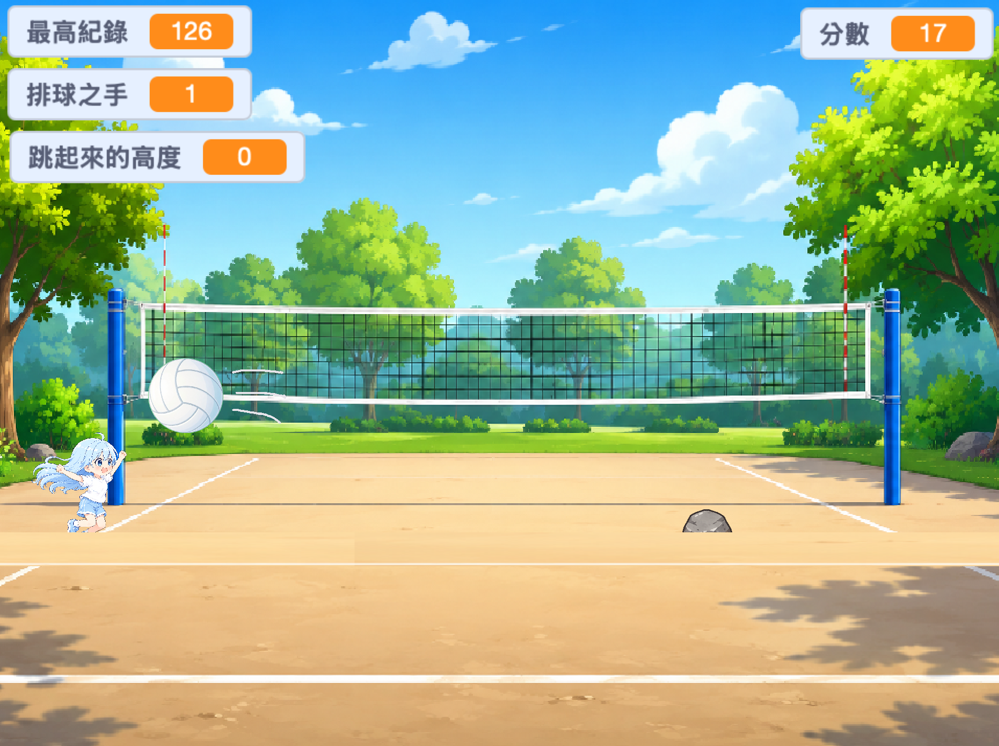
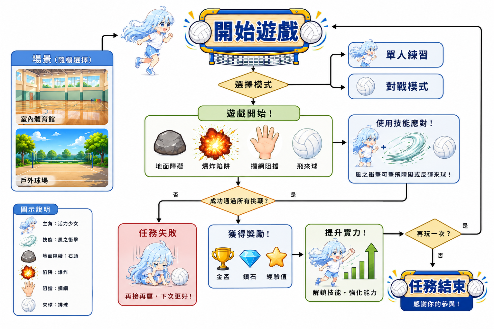
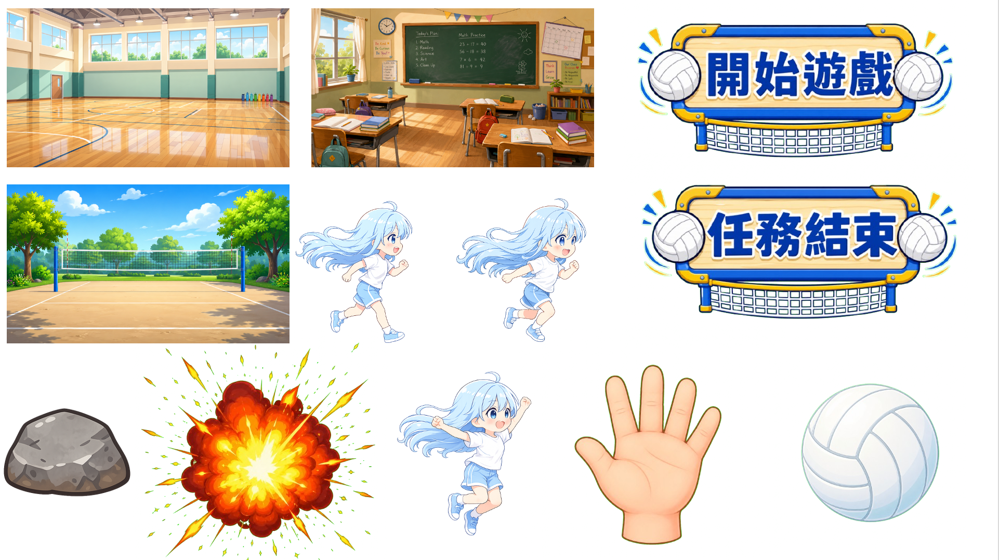

從邏輯思想到遊戲實現的全過程
這是一次困難重重的任務！需要不停躲避障礙物，天空隨時都有可能有排球飛過，而你不只需要躲避障礙物，還需要撿取手打走排球，快去克服重重難關吧

躲避障礙物 檢取手 把手丟向排球 計分系統
玩家操可以控小女孩的跳躍，讓自己躲避危險。遊戲加入最高得分機制，讓每一次挑戰都更有目標感！
取用了Chat GPT生成的圖片 AI 生成的場景人物我還用了卡通風格讓畫面變得可愛
先按遊戲開始，看到石頭要跳起來，看到手可以撿，遇到排球也要躲，一隻手可以抵擋一次排球。
>>>>>>>>>>>【詳細機制拆解】

【素材】
